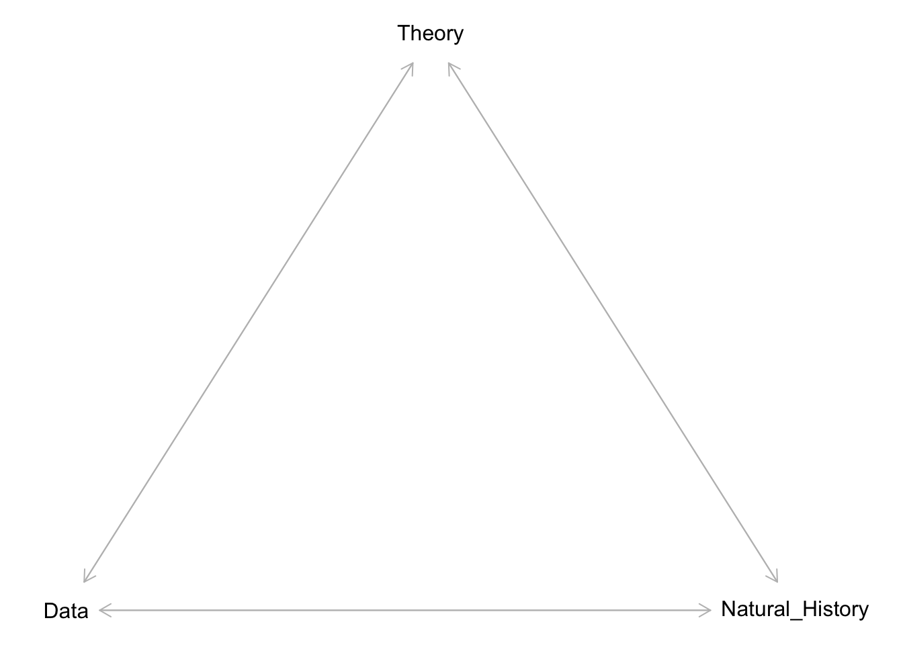
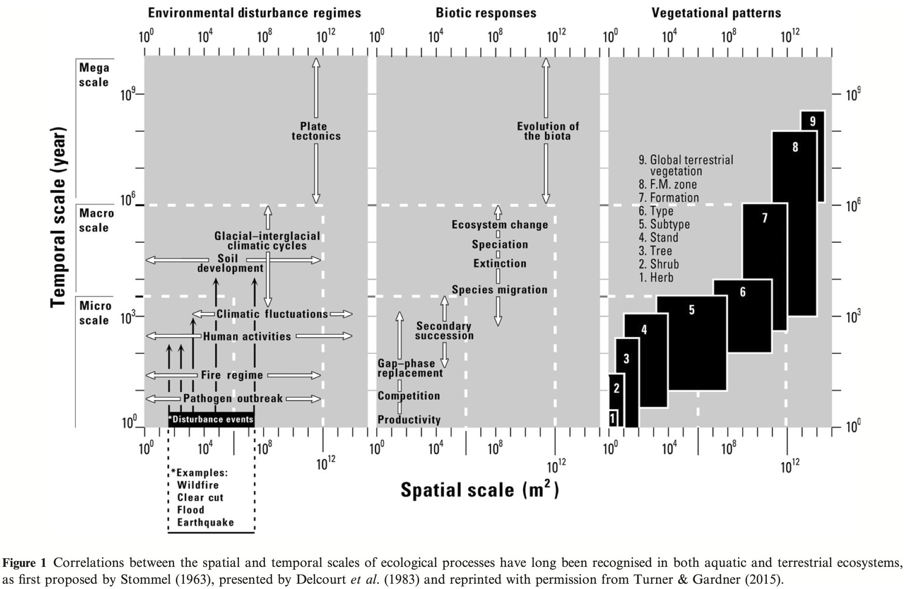
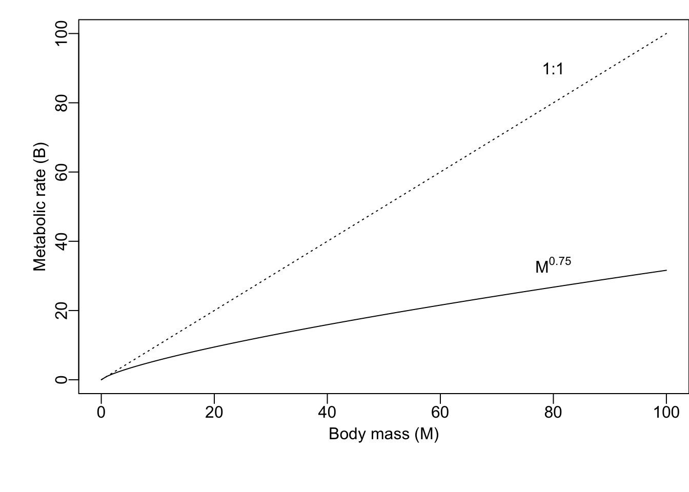
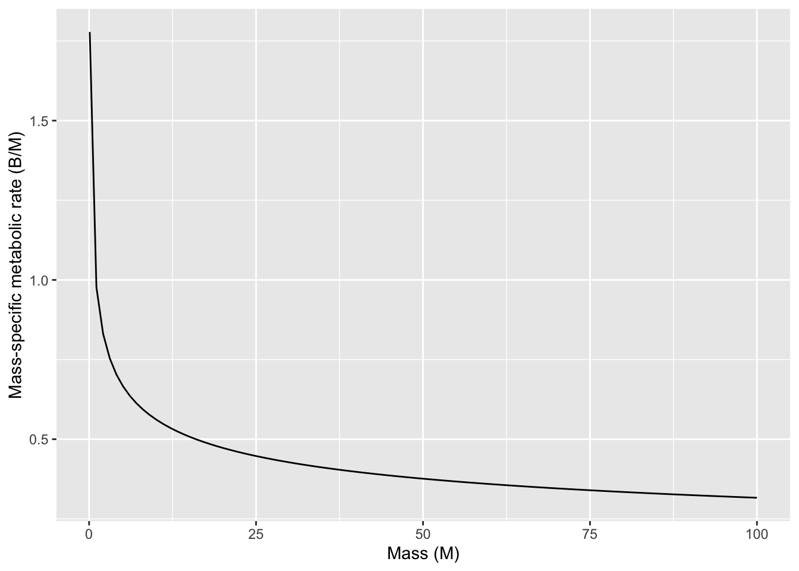
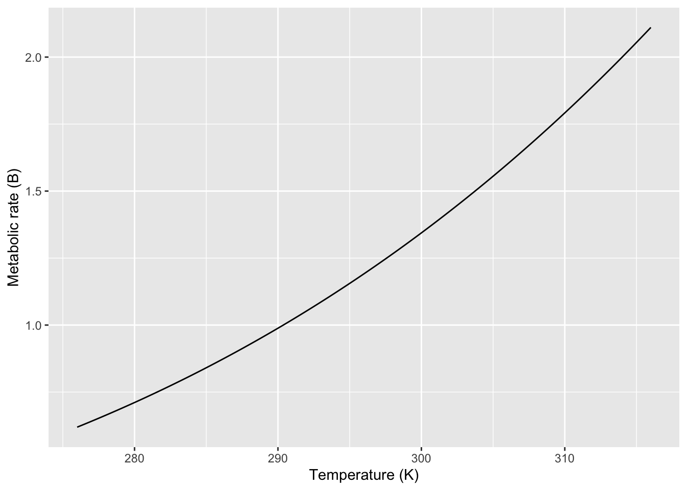
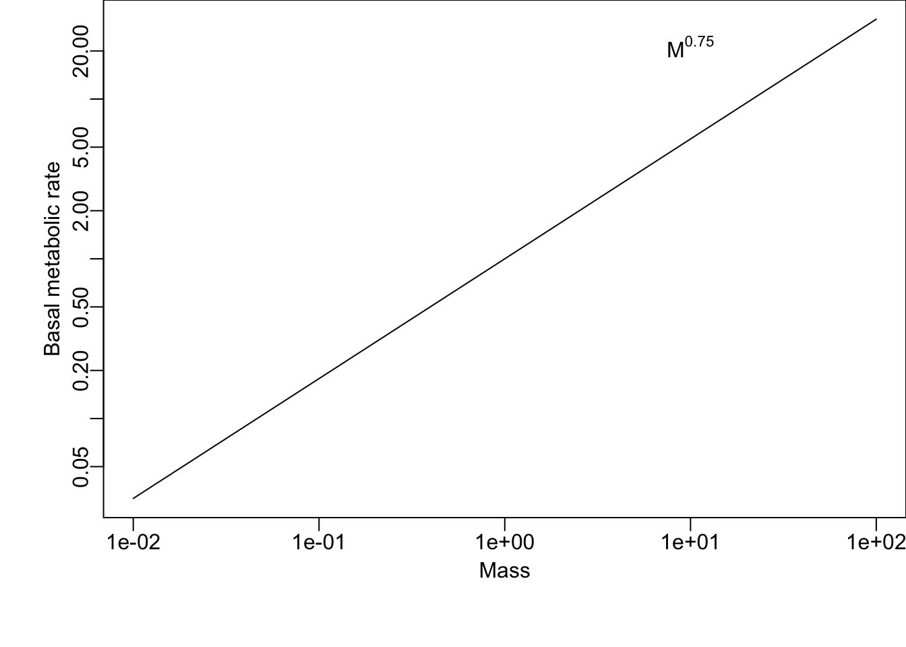
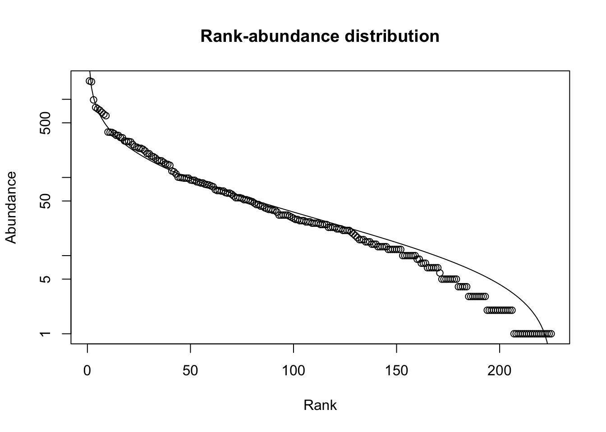
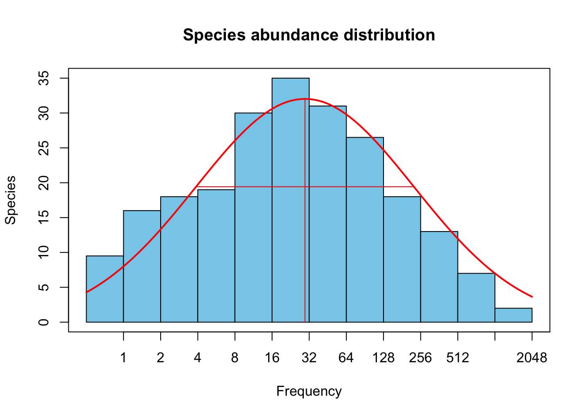
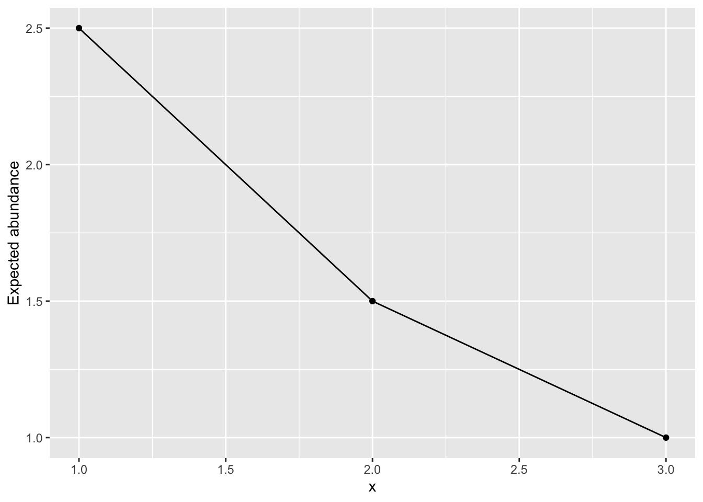

library(tidyverse)
library(dagitty)
library(primer)2 Theory in Ecology
In this chapter, we introduce a perspective on ecological theory, and provide two examples of efficient theory, metabolic scaling and maximum entropy theory.
Theory is really, really important (Figure 2.1). Without theory of some sort to guide us, we are merely counting pebbles in a quarry. Good theory may be conceptual or mathematical, and helps us focus more clearly and in a less ambiguous manner on the systems we study. In this book, we explore mathematical models that provide special cases of theory.
g <- dagitty(
"dag{
Theory -> Natural_History -> Data;
Data -> Theory;
Theory <- Natural_History <- Data;
Data <- Theory
}"
)
coordinates(g) <- list(
x=c(Theory=1, Natural_History=2, Data = 0),
y=c(Theory=0, Natural_History=sqrt(3), Data = sqrt(3))
)
plot(g)
Scientific theory is a body of knowledge that provides an organized and mechanistic view of how the world works (Scheiner 2010). Theories concerning gravity, general relativity, and evolution by natural selection provide structured ways of connecting observations, patterns, and processes that provide insight into why the world is the way it is. This stands in stark contrast to the colloquial use of theory that implies a lack of knowledge, as when someone says “oh, that’s just a theory”, referring to a guess without much evidence. Scientific theory is a set of explanations whose validity has been tested repeatedly by experiments and new data.
2.1 Examples of theories
Ecology has lots of theories, of all different types. Below I discuss some which may be prevalent, important, useful, or some combination.
2.1.1 Hierarchy theory

An early and persistent organizing schema in ecology is based on hierarchy theory (O’Neill et al. 1986; Rose et al. 2017, and references therein). It posits that ecological systems are structured hierachically, such that each entity comprises subunits. For instance, an entity such as a population of big bluestem grass (Andropogon gerardii) is part of a larger ecology community of many species. The population of big bluestem comprises subpopulations separated in space, a subpopulation comprises separate individuals, that each individual comprises multiple ramets and a set of organ systems and tissues, which comprise different cell types. This theory posits that each entity gives rise to emergent properties to the hierarchical level above it, and influences processes within each smaller sub-entity in the hierachical level below it. As a disciplinary organizing principle, this approach structures nearly all of the ecology curriculum.
Hierarchy theory gets more complicated when the levels of a hierarchy start to include fundamentally different types of entities. The big bluestem hierarchy above included only biotic components–a individual is part of a population which is part of a community of individuals of multiple species, and is made up of organ systems and tissues. Ecology, however, includes both the biotic and the abiotic parts of environments. An ecosystem includes a community of species, but also the nutrients, water, light, and other abiotic components, along with the spatial arrangement of all of these things.
Different hierarchies are useful for different questions. An individual organism can play very different roles in different hierarchies. Consider and individual bunch grass. To understand how a population evolves, we need to count individuals within a population, because evolutionary fitness is tracked by the number of independent reproductive units. In contrast, to understand competitive interactions, it may be much more important to weigh the biomass of groups of individuals in a population, because biomass is more closely related of resource uptake.
2.1.2 A general theory of ecology
Good scientific theories exist within a hierarchy of disciplinary knowledge (Scheiner and Willig 2011). They explain phenomena within a domain of knowledge which is organized around principles and assumptions. Scheiner and Willig posit a theory of biology that explains phenomena relating to the “diversity and complexity of living systems”. One of the ten principles on which this theory depends is that “the cell is the fundamental unit of life”. Subsumed within their theory of biology is the theory of cells whose domain is “cells and the causes of their structure, function, and variation.” This theory in turn is based on principles and has theories to organize our understanding of cells and what cells do.
Models are specific and explicit manifestations of more general theories. In this book, we focus on popular mathematical models that are specific manifestions of theories of ecology.
Scheiner and Willig (2011) propose a theory of ecology, some of which we cover in this book. Here is part of this theory:
The General Theory of Ecology
Domain: The spatial and temporal pattern of the distribution and abundance of organisms, including causes and consequences.
Principles:
- Organisms are distributed in space and time in a heterogeneous manner.
- Organisms interact with their abiotic and biotic environments.
- Variation in the characteristics of organisms results in heterogeneity of ecological patterns and processes.
- The distributions of organisms and their interactions depend on contingencies.
- Environmental conditions as perceived by organisms are heterogeneous in space and time.
- Resources as perceived by organisms are finite and heterogeneous in space and time.
- Birth and death rates are a consequence of interactions with the abiotic and biotic environment.
- The ecological properties of species are the result of evolution.
These principles constitute what we know is true about ecological systems. Some of these principles provide the focus for a single chapter while other principles apply broadly to many chapters in this book.
Here is my own perspective on a general theory of ecology:
Domain: The house of life1: its constituent entities, causes, and consequences.
1 “ecology” derives from the Greek “oikos” which means the rules of the house
Principles:
- Entities2 are open systems with inputs and outputs.
- Entities have internal complexity.
- Entities include self-replicating components (living elements).
- Entities interact via inputs, outputs, and behavior.
- Rates of change, including inputs and outputs, are influenced directly by physical factors: space, temperature, and concentration.
2 An entity may be an ecosystem, a community, a population, an individual, or some other system with operationally defined boundaries.
You will see elements of these principles throughout this book as well.
2.1.3 Efficient theory
Marquet et al. (2014) argue that the best theories are those which are efficient. Such theories tend to be based on first principles, which are observations and laws that are fundamental assumptions in a scientific domain. In biology, such principles can include the laws of thermodynamics, and mathematical properties such as the central limit theorem. Theories built upon first principles are thus well-grounded in reality as we understand it and lead logically to refinements. Marquet and his colleagues also claim that efficient theory is expressed in mathematics. Mathematics is a universal language that is unamibiguous. It forces us to be as clear as possible about what we mean when we state a theory.3 Last, efficient theories are those that make a large number of predictions using only a small number of free parameters.4 Examples of efficient theories we cover in this book include metabolic scaling, exponential growth, density dependence, and ecological neutral theory.
3 \(E=mc^2\) - need I say more?
4 Variables are quantities we measure and which change through time (e.g., population size). Parameters are (usually) fixed constants that govern the rates of change of variables (e.g., per capita birth rate).
Marquet et al. and Scheiner and Willig emphasize slightly different features of the definition of “theory”. Scheiner and Willig emphasize relatively broad ideas that are well-supported by experiments and repeated observation. Marquet and colleagues tend to mean something fairly specific and narrow, typically something that can be expressed mathematically. Scheiner and Willig might refer to such theory as constitutive theory or even simply a model.
Next, I describe the Metabolic Theory of Ecology. This theory is based on first principles, and its central tenets are expressed mathematically. It’s core equation has a very small number of free parameters (fitted constants) and makes a very large number of testable predictions. Parts of this theory are supported by a very large number of observations. It fits everyone’s definition of theory.
2.2 An example: Metabolic Theory of Ecology
Metabolic rate is central to how rapidly individuals forage for, consume and use resources, reproduce and die. The metabolic theory of ecology (Brown et al. 2004) is a well-supported body of knowledge about the underlying mechanisms, and the resulting profound and wide-ranging consequences for populations and ecosystems.
Body size and temperature are fundamental properties of organisms and the environment. The study of how body shape and body processes scale with body size is allometry. Because body size affects metabolic rate, body size indirectly helps determine population growth rates and how species interact with each other. Temperature affects how molecules vigorously molecules vibrate and move, and so increasing temperature tends to speed up chemical reactions. As metabolism is really just a complex network of biochemical reactions, temperature influences metabolic rate.
The core of this theory is expressed in a simple mathematical equation that describes how body size and temperature govern metabolic rate.
2.2.1 Body-size dependence
There is a profoundly simple and general rule describing the effect of interspecific variation in body size on metabolism.5 This biological law is referred to as the Kleiber law (Kleiber 1932), or quarter power scaling (Brown et al. 2004). When we compare the basal (i.e. resting) metabolic rates of different species, across a wide range of body sizes spanning many orders of magnitude, we find that
5 Metabolic rate may be measured by variables tied directly to metabolism, such as the rate of oxygen or energy consumption, or CO\(_2\) production.
whole-organism resting metabolic rate increases with organism mass raised to the three-quarter power, or,
\[ B = aM^{z} \quad;\quad z = 3/4 \]
In this equation, \(B\) is basal, or resting, metabolic rate, \(M\) is body mass, \(a\) is a proportionality constant, and \(z\) is the power law scaling coefficient. The proportionality constant \(a\) varies depending on the type of organism such as arthropods, fish, or mammals. Plants scale in the same manner (Niklas and Enquist 2001), although size or mass is a little trickier to measure. The scaling coefficient, \(z\), is the seemingly magical constant that many have argued does not vary substantially among different types of organisms.
Ecologists typically describe metabolism-mass relations and other power law behavior using logarithmic scales. When we do that, power law relations become linear. Using our rules for exponents and logarithms, metabolic scaling becomes \[ \log B = \log a + z\log M\] so that \(\log B\) increases linearly with \(\log M\) with a slope of \(3/4\). Our brains can process and compare linear relations much more easily than curvilinear ones.
Here we plot the curvilinear relation in R using curve() in the graphics package of R that is included in the base installation as one of the core packages. The function curve() can plot any curve that be expressed as a function of x. Below, we draw a curve of a dotted 1:1 line for comparison, and then add the power function \(x^{3/4}\).

## using curve, let your variable be 'x'.
curve(1*x, from = .01, to=100, ylab = "Metabolic rate (B)",
xlab="Body mass (M)", lty=3)
curve(x^(3/4), from = .01, to = 100, add=TRUE)To help us grasp the implications of this, let’s consider mass-specific metabolic rates. “Mass-specific” means on a per-gram basis.6 Mass-specific metabolic rate is basal metabolic rate of an individual divided by its mass, or \(B/M\).
6 With plants, we often measure something called “specific leaf area”, SLA, which is the two dimensional area of a leaf divided by its mass.
The mass-specific metabolic rate allows us to compare directly, for example, the metabolic rate of a cell in a shrew vs. a cell in an elephant. Which cell is burning fuel faster?
We can estimate this from the above metabolic scaling principle and the using rules exponents \[ \frac{B}{M} = a \frac{M^z}{M^1} = a M^{z-1} = aM^{-1/4}\] From this, we now have the rule that
mass-specific metabolic rate declines with organisms mass raised to the negative one quater power

Over the years, there has been heated debate about (i) the precise value of the scaling coefficient \(z\), and (ii) the underlying mechanism. Early arguments suggested that \(z \approx 2/3\) because the rate heat dissipation scales with the amount surface area. Why \(2/3\)?
Let’s envision the volume of an organism having three linear dimensions, so the volume scales to the cube of linear dimensions, while the surface area scales to the square of these linear dimensions,7 \[V \propto L^3\] \[A \propto L^2\] The early explanation was that metabolic rate, \(B\), scales linearly with area, \[B \propto A^1 \propto L^2\]. With substitution we get, \[L^2 \propto V^z \propto (L^3)^z\] implying that the exponents \(2 = 3z\) or \(z=2/3\), so we get, \[B=V^{2/3}\], and, for the most part, mass scales linearly with volume for mammals or any other such group.
7 A linear relation is one in which \(y\) is proportional to \(x\), or \(y \propto x\).
This early theory was because it started with first principles (heat dissipation and geometry) and resulted in the prediction of a single parameter. It could then be used to make predictions about how metabolic rate scales with body mass. Metabolic rate governs a huge amount of biology and ecology, including resource consumption rates, lifespan, and maximum population growth rates. Therefore, this theory and this model could be powerful tools for understanding the world and making testable predictions.
The above model is good because it could be tested. That is what has been done, and scientists found that there was a consistent mismatch between observations and the theory. Investigators showed that the value of the exponent appeared closer to 3/4 raher than 2/3. In the 1990s, a group including Jim Brown and Geoffrey West (West et al. 1997) proposed an underlying mechanism that explained why it should be 3/4. They assumed that organisms must
- distribute resources from a single source through a branching, fractal-like, space-filling network to all parts of the body,
- the size of the smallest branch ( a capillary) was the same for organisms of all sizes.
- the energy required to distribute the resources must be minimized, that less energy-efficient designs would be lost through natural selection.
The prediction that resulted from these assumptions was that the exponent would be 3/4. This theory and model begin with different first principles and makes a different prediction.
Soon Jayanth Banavar and his colleagues offered an alternative (Banavar et al. 1999; Banavar et al. 2002), arguing that the assumption of the fractal-like network was not correct, and in any event, was not necessary and did not apply to all organisms. They proposed different theory with less restrictive assumptions and found nonetheless that the exponent was also predicted to be 3/4.
At the base of all these arguments is the geometry of the resource distribution system. All organisms take in limiting resources and have to distribute those resources to each part of each cell in the body. The key point is that the larger the organism, the greater the portion of the resources are in transit at any instant in time. This leads to an increasingly inefficient system, in which the metabolism of larger organisms has to run more slowly per unit resource:
Larger organisms can process more resources per unit time (\(B=aM^{3/4}\)), but do so less and less efficiently (\(\frac{B}{M}=aM^{-1/4}\)) due to resources in transport.
Banavar, Brown and others eventually collaborated to address quarter power scaling in animals in particular which led to additional novel predictions (Banavar et al. 2010).
This theory remains a fertile and active area of research (Glazier 2018). The interested reader should be careful to distinguish between patterns observed across many species of very different sizes, versus patterns observed in a single species with individuals of different sizes versus other types of patterns. Subtly different patterns may be driven be very different mechanisms.
2.2.2 Temperature dependence
In addition to body size, temperature plays the other key role in regulating metabolic rate. The Arrhenius equation connects the macroscopic property of temperature to the kinetic energy of molecules and the rates they govern. Metabolic rate is proportional to these rate determining processes, \[B = a e^{\frac{-E_a}{kT}}\] where \(a\) is just a constant, \(e\) is the exponential, \(E_a\) is the average activation energy of rate-limiting enzymes (units, eV), \(k\) is Boltzmann’s constant (units eV\(\,\)K\(^{-1}\)), and \(T\) (units deg K). Bolztmann’s constant (\(\backsim 8.6 \times 10^-5\)\(\,\)eV\(\,\)K\(^{-1}\)) converts the macroscopic property of temperature to kinetic energy of molecules.
Individual biochemical reactions combine to determine basal metabolic rate, so Gillooly (2000) have taken this as a foundation for the metabolic theory of ecology (Brown et al. 2004). In 2000, they suggested that the average activation energy is approximately \(E_a = 0.23\,\)eV . Subsequent work has described this as “temperature sensitivity”, where larger numbers imply that organisms respond more strongly to temperature variation.
The Arrhenius equation is a little more complicated that a simple power law, but not too much. Over the range of biologically relevant temperatures, it is dominated by a largely exponential increase in metabolic rate with increasing temperature (Fig. Figure 2.4).
# with base R
# base R: curve(10^4*exp(-0.23/(8.5 * 10^-5 *x)), 276, 316), ylab="B", xlab='T')
# or ggplot2
# the function, with default parameter values
eq.t <- function(t,a=10^4,E=0.23,k=8.6 * 10^-5){a*exp(-E/(k*t))}
# the data used in our function
temps <- data.frame(t=276:316)
ggplot(data=temps, aes(x=t)) +
# set the basic properties of the plot
stat_function(fun=eq.t, geom="line") +
# set the function to plot
xlab("Temperature (K)") + ylab("Metabolic rate (B)")
# add labels
When we linearize the relation between metabolic rate and temperature, we get \[ \begin{aligned} B &= a e^{\frac{-E_a}{kT}}\\ \log(B) &= \log{a} - E_a\frac{1}{kT}\\ \end{aligned} \] where the dependent variable is \(1/(kT)\), \(-E_a\) is the slope, and \(\log a\) is the intercept. Thus, the negative slope of this relation describes theoretical prediction for the effect of temperature on metabolic rate.
So, there you have it. The metabolic theory ecology is the algebraic product of body size- and temperature-dependence: \[B = a M^{3/4} e^{\frac{-E_a}{kT}}\] This theory makes quantitative predictions regarding all kinds of ecology phenomena (Brown et al. 2004), including
- home range size
- population growth
- population size
- resource uptake
- predation and other species interactions, and
- ecosystem cycling.
Note that these relations are based on first principles of geometry and thermodynamics, and that they depend on only a small number of parameters (\(a\), \(-E_a\), and perhaps \(z=3/4\)), and makes a tremendous number of predictions. Therefore, Marquet et al. (2014) propose that this is “good” theory, and very efficient.
2.3 Power law scaling implies constant relative differences
In power law scaling, relative change is constant. That is, a proportional change in one variable results in a proportional change in the other. For instance, when we compare a smaller species to a larger species with \(100 \times\) the body mass, we can expect to see metabolic rate increase by \(31.6 \times\), regardless of the mass of the smaller species. For now, we will verify this numerically for some limited cases.
# define body mass and metabolic rate
m <- c(.01, 1, 100, 10000)
b <- m^.75Now we will divide each mass \(i\) by the next smallest mass \(i-1\). We do that using a vector by dividing each mass except the first one, by each mass except the last one.
# round(x, digits=0) rounds number to zero decimal places
round( m[-1]/m[-length(m)], digits = 0)
round( b[-1]/b[-length(b)], digits = 1)When we do these divisions, we see the constant relative change (Table @ref(tab:relativemb)).
| Small | Med. | Big | Huge | |
|---|---|---|---|---|
| Mass | 0.01 | 1.00 | 100.00 | 10000.00 |
| Basal.metabolic.rate | 0.03 | 1.00 | 31.62 | 1000.00 |
| Relative.change.m | NA | 100.00 | 100.00 | 100.00 |
| relative.change.b | NA | 31.62 | 31.62 | 31.62 |
We can verify this generally using algebra, not just in the particular case above. We will show that if mass increases by a constant multiplier, metabolic rate will also, regardless of the particular masses involved.
Let mass \(m_2\) be greater than mass \(m_1\) by a factor of \(c\), so that \(m_2 = c m_1\), and \[\frac{m_2}{m_1} = c\].
We would like to show that the ratio of the metabolic rates \(b_2 / b_1\) is also a constant. Since \(m_2 = cm_1\), we can say that \[b_1 = a m_1^{3/4}\] \[b_2 = a (cm_1)^{3/4} = ac^{3/4}m_1^{3/4}\] \[\frac{b_2}{b_1} = \frac{ac^{3/4}m_1^{3/4}}{am_1^{3/4}}\] When we reduce this fraction, we a left with \[\frac{b_2}{b_1} = c^{3/4}\]
This shows that with power law scaling, increasing \(x\) by a constant multipier (or proportion), \(y\) increases by the same proportion raised to that power.
Let’s represent this graphically in a couple of ways, reusing data we made up previously in this chapter. First, we just change the axes themselves, so that the units of the scales are multiples of 10 (often in scientific notation).
# using base R
par(mar=c(5,4,0,0), mgp=c(1.5,.4,0) )# set figure margins in "lines"
curve(x^(3/4), from = .01, to = 100, log="xy", ylab="Basal metabolic rate", xlab="Mass")
text(10, 80^.7, expression(M^0.75))
2.4 Meet METE: Maximum Entropy Theory of Ecology
The Maximum Entropy Theory of Ecology is best known for making predictions and elucidating patterns of species-area relations and species abundance distributions that emerge in relatively stable ecological communities and ecosystems (Harte and Newman 2014). However, it is an active area of research and Harte and others are extending the ideas into non-equilibrium systems as well (Harte et al. 2021).
Entropy is, basically, disorder. Less entropy means more order or structure. Maximum entropy is maximum disorder. The universe tends toward maximum entropy, although in some places and times, like parts of our world right now, entropy can decrease. Physicists are the folks most responsible for our understanding of entropy, and Edwin Jaynes is arguably the one most responsible our understanding and appreciation of its role in information and probability.
MaxEnt, or the principle of maximization of information entropy, or the principle of maximum entropy is that, given a set of constraints on a system, the least-biased probability distribution that describes data arising from that system will be the one with maximum entropy.
The principle of maximum entropy has show that maximal uncertainty arising from the flattest distribution, given known constraints, provides the least biased description of a system. It can provide the least biased probability distributions for these situations with these constraints:
- Consider a jar contains jelly beans, and contains at least one and no more than 1000. What is the least biased distribution of possible counts of jelly beans?
- Imagine a hectare of land that contains trees of different heights, and that the mean height is three meters. What is the least biased distribution of possible tree heights?
- Regarding this forest - what if you were told that the variance in height was two meters? What would be the least biased distribution of possible tree heights?
The principle of maximum entropy could help us prove that, in the absence of other information, the least biased distributions for these sets of constraints would be the uniform, exponential, and Gaussian (or normal) probability distributions.
The maximum entropy theory of ecology (Harte and Newman 2014) can tell us what to expect when we know very little, or when very little is going on aside from random noise.
We will talk more about the METE in our chapter on diversity, but I mention it here to emphasize that patterns arise in ecology via random noise.
The rank-abundance distribution is a famous ecological pattern. It is the log-abundance or relative abundance of species, arranged from the most abundant to the least abundant (Fig. @ref(fig:mete1)).
library(vegan)
data(BCI)
abun <- colSums(BCI)
mod <- rad.lognormal(abun)
plot(mod, main="Rank-abundance distribution")
The curve formed by these data points (Fig. Figure 2.6) is steep at first, among the most abundant species. The curve then flattens out a bit before getting a little bit steeper again.
mod.oct <- prestonfit(colSums(BCI))
plot(mod.oct, main="Species abundance distribution") 
If we group species into logarithmic abundance categories, and make a histogram of abundances, we get the *species abundance distribution (Fig. Figure 2.7). Preston (1962) noted that the distributions were remarkabling similar to a normal (Gaussian) distribution, when abundances were log-transformed (resulting in a lognormal-like distribution). It turns out that this curve is quite common and for decades ecologists argued about how we might infer the underlying ecological processes on the basis of the shape of the curve. This discussion died out once ecologists admitted that it was impossible to determined the processes on the basis of the pattern.
The discussion of the shape of the rank-abundance distribution was revived in the late nineties when Steve Hubbell showed that if you pretend all individuals are equally likely to live or die, independent of their species identity, then you should expect this pattern (Hubbell 2001). Later, John Harte showed that the principle of maximum entropy was a more general approach to this question and could be extended into other realms and patters.
As an example, consider a community of five individuals and three species. Those are our only constraints, \(N=5\), \(S=3\). How many different possible distributions of species abundances can we get if we assume maximum uncertainty, i.e., maximum entropy? Is there any way to know? Because we have so few, we can count them.
Consider five individuals distributed among three species (rows) and list all possible community states (columns).
# by default, R fills matrices by columns.
states <- matrix(
c(3,1,1, # column 1,
1,3,1, # column 2, etc.
1,1,3,
2,2,1,
2,1,2,
1,2,2),
nrow = 3 )
# label species
rownames(states) <- LETTERS[1:3]
states # each column is a possible configuration. [,1] [,2] [,3] [,4] [,5] [,6]
A 3 1 1 2 2 1
B 1 3 1 2 1 2
C 1 1 3 1 2 2A rank or species abundance distributions does care which species is most abundant, just that different species exist and can have different abundances. Maximum entropy would have us ask, “what is the average abundance of the most abundant species?” Let’s calculate that. We can see that the most abundant species has either 3 individuals or two individuals and each of these occurs three times. Therefore the average abundance of the most abundant species is calculated as
(3+3+3+2+2+2)/6[1] 2.5or two and half individuals out of five individuals in the whole community.
How about the least abundant species? The least abundant species always has only one individual. Therefore, the second most abundant species has, on average, 1.5 individuals.
d <- data.frame(x=1:3, y=c(2.5, 1.5, 1) )
ggplot(d, aes(x, y) ) +
geom_line() + geom_point() +
labs(y="Expected abundance") 
This is one prediction of METE: given only the number of individuals and the number of species, it can predict a species abundance distribution.
2.5 In fine
Useful theory helps us think more clearly and sometimes more imaginatively about how the world works. Good theory is usually efficient theory, making the greatest number of predictions with the fewest free parameters. It helps clarify our thinking and disentangle the myriad mechanisms at play in our ecological systems.